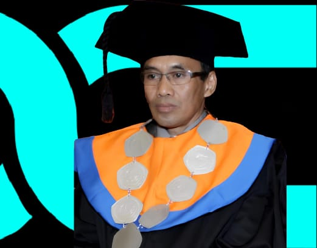

Dr. Nasrullah. M.Si., M.Kom
REKTOR
Universitas Handayani Makassar
Universitas Handayani Makassar didirikan sebagai Sekolah Tinggi Manajemen dan Informatika Handayani atau STMIK Handayani Makassar sejak tahun 1996 dan menyelenggarakan pendidikan berbasis IT (Information Technology). UHM didirikan pada tanggal 21 Juni 1996 yang pada saat itu menyediakan enam program studi, masing-masing Magister Sistem Komputer (S2), Teknik Informatika (S1), Teknik Komputer/Sistem Komputer (S1), Sistem Informasi (S1), dan Manajemen Informatika (D3). Kemudian pada tahun 2000 dibuka program studi Komputerisasi Akuntansi (D3). Sejak tahun 2012, STMIK Handayani telah menempati gedung baru di Jl. Adhyaksa Baru yang diistilahkan dengan Gedung Toga.
VISI
- Universitas yang unggul merupakan perguruan tinggi yang memiliki keunggulan dibidang teknologi informasi dan kewirausahaan. Lulusan yang memiliki karakter dan berkepribadian.
- Sumberdaya Manusia adalah lulusan yang menguasai kompetensi dibidang informatika, administrasi publik, hukum, dan berjiwa enterpreneurship.
- Technopreneurship adalah kemampuan untuk mengubah setiap peluang, menjadi usaha bisnis yang berbasis teknologi informasi.
- Teknologi Informasi adalah teknologi yang digunakan dalam mengolah data, memproses data, memperoleh, menyusun, menyimpan, dan mengubah data untuk mendapatkan informasi yang bermanfaat serta berkualitas.
MISI
- Menyelenggarakan Pendidikan Tinggi melalui sistem pendidikan dan pengajaran yang bermutu bercirikan Technoprenership;
- Melaksanakan penelitian dalam bidang Technoprenership yang dapat menciptakan lapangan kerja baru;
- Mengembangkan kegiatan pengabdian kepada masyarakat melalui penerapan ilmu pengetahuan dan teknologi untuk kesejahteraan masyarakat;
- Meningkatkan kualitas kerjasama untuk kemandirian penyelenggaraan pendidikan tinggi; dan
- Menyelenggarakan tata pamong dan tata kelola Universitas yang sehat (good university governance) kredibel, transparan, akuntabel, bertanggung jawab, dan adil dalam pelaksanaan otonomi perguruan tinggi.